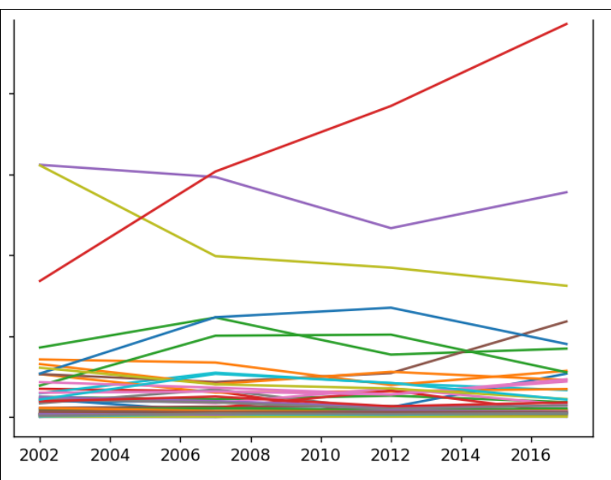

Home
Portfolio
About Me
This is my Portfolio Page!

Project 1.1.9
This is a BBQ burger, where we coded specific commands so that each person can decide what to have on their burger. They could decide if they want cheese, lettuce, tomatoes, onions, etc. on their burger and are able to customize their toppings on the burger how ever they like.
Turtle Race!

This is 2 player game Turtle Race where we assign certain keys to certain players and the two players race each other to determine the winner of the race. A leaderboad will then pop up indicating the victor of the race.
Cat Run
This is Cat Run where you must pass obstacles to reach the finish line.
2.1.6 Project

This is our fish tank project where we identified problems and fixed problems using evidence.
4.1.4 Netlogo Project Bug Hunt Predators and Invasive Species

This is my netlogo simulation on Bug Hunt Predators and Invasive species. It describes the predator prey cycle and the impact of invasive species on the ecosystem. The simulation provides a real-world problem with starting data and can be used as a tool to come up with solutions to real world issues that may not be practical to try hands-on. In our case, decreasing invasive species can lead to population stability and a healthy predator prey cycle.
3.1.6 Project Analyzing Rover Data

Our conclusion is that the rover is in Rocky Mountain Region. We came to this conclusion based on the four different sensor graphs given by the data. The light graph matched the Rocky Mountains with fluctuating of light. The temperature rose dramtically like the description provides. There is also constant sound which is supported by the graphs as well. Hence, we came up with the conclusion that the region is Rocky Mountains.
3.2.4 Project Making Meaning from Data

This is our image of the graph for honey production over a couple of years specifically from 2002 to 2016. The graph just addresses the data by providing a visual in the trend for honey production over a period of time. Bee colonies in the U.S. seem to be on the rise and there seems to be overutilization of the bee hives and honey in some states in America overall.